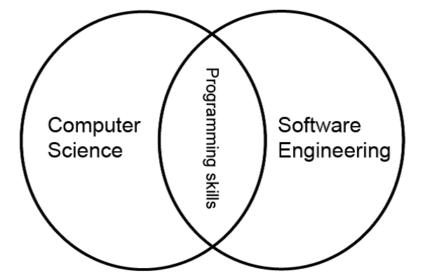
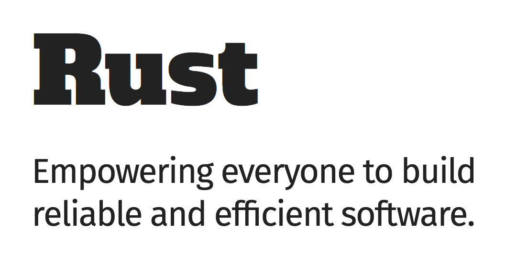
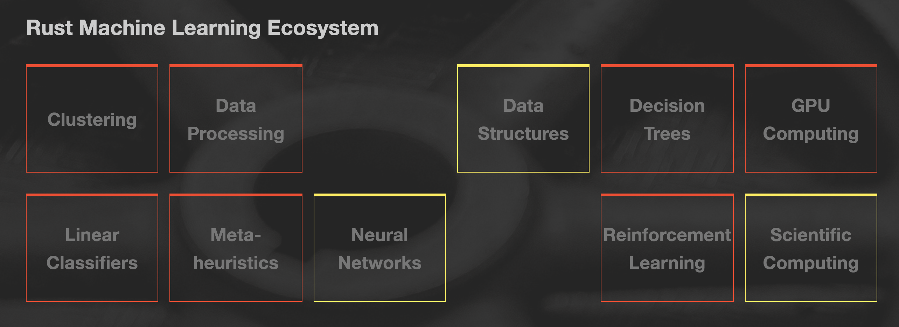
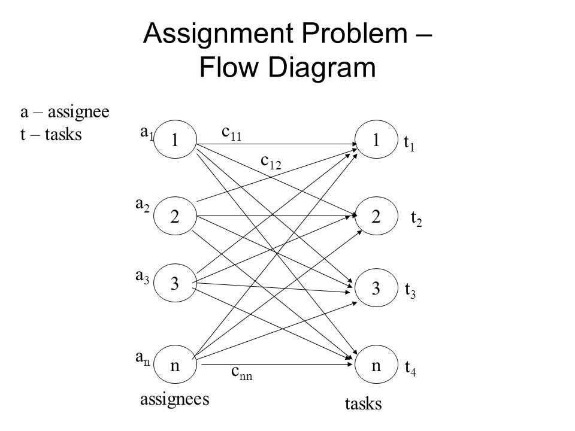

Computer science is the study of “automating algorithmic processes that scale” (Owen Astrachan)
Computer Science x Software Engieneering
x
Scientific method


http://www.arewelearningyet.com/
Should I do scientific computing in Rust?
Do you have to optimize?
Would you use C/C++?
Are you Ok with some glueing?
Probably no if:
Probably yes if:
But other LLVM languages are always available.
The ndarray crate provides an n-dimensional container for general elements and for numerics.
https://docs.rs/ndarray/0.12.1/ndarray/
Linear algebra library with transformations and statically-sized or dynamically-sized matrices.
Linear algebra package for rust-ndarray using LAPACK
https://www.nalgebra.org/rustdoc/nalgebra/index.html
petgraph is a graph data structure and algorithms library.
https://docs.rs/petgraph/0.4.13/petgraph/
https://github.com/google/evcxr/tree/master/evcxr_jupyter
Follow your flagship science language (Python, R, …)
[package]
name = "my-package"
version = "0.1.0"
authors = ["Gabriela Surita <gabsurita@gmail.com>"]
edition = "2018"
[lib]
name = "my_lib"
crate-type = ["cdylib"]$ pyo3-pack
pyo3-pack 0.4.2
konstin <konstin@mailbox.org>
Build and publish crates with pyo3 bindings as python packages
USAGE:
pyo3-pack <SUBCOMMAND>
FLAGS:
-h, --help Prints help information
-V, --version Prints version information
SUBCOMMANDS:
build Build the crate into wheels
develop Installs the crate as module in the current virtualenv so you can import it
help Prints this message or the help of the given subcommand(s)
list-python Searches and lists the available python installations
publish Build and publish the crate as wheels to pypi#![feature(specialization)]
use pyo3;
use pyo3::wrap_function;
use pyo3::prelude::*;
use numpy::PyArray1;
#[pyfunction]
fn sum(array: &PyArray1<f64>) -> f64 {
array.as_array().sum()
}
#[pymodinit]
fn my_lib(_py: Python, m: &PyModule) -> PyResult<()> {
m.add_function(wrap_function!(sum)).unwrap();
Ok(())
}
scipy.optimize.linear_sum_assignment
https://docs.rs/hungarian/1.1.0/hungarian/
#[feature(specialization)]
use pyo3;
use pyo3::wrap_function;
use pyo3::prelude::*;
use hungarian::minimize;
use numpy::PyArray2;
#[pyfunction]
fn hungarian(m: &PyArray2<u32>) -> Vec<Option<usize>> {
let costs = m.as_slice();
let n = arr.len();
let m = if n > 0 { arr[0].len() } else {0};
minimize(costs, n, n)
}
#[pymodinit]
fn lap_rust(_py: Python, m: &PyModule) -> PyResult<()> {
m.add_function(wrap_function!(hungarian)).unwrap();
Ok(())
}import numpy as np
from scipy.optimize import linear_sum_assignment
import lap_rust
mat = (np.random.rand(400, 400) * 100).astype(np.uint32)%timeit linear_sum_assignment(mat)
38.6 ms per loop (mean ± std. dev. of 7 runs, 1 loop each)
%timeit lap_rust.hungarian(mat)
3.87 ms per loop (mean ± std. dev. of 7 runs, 1 loop each)Counting sort